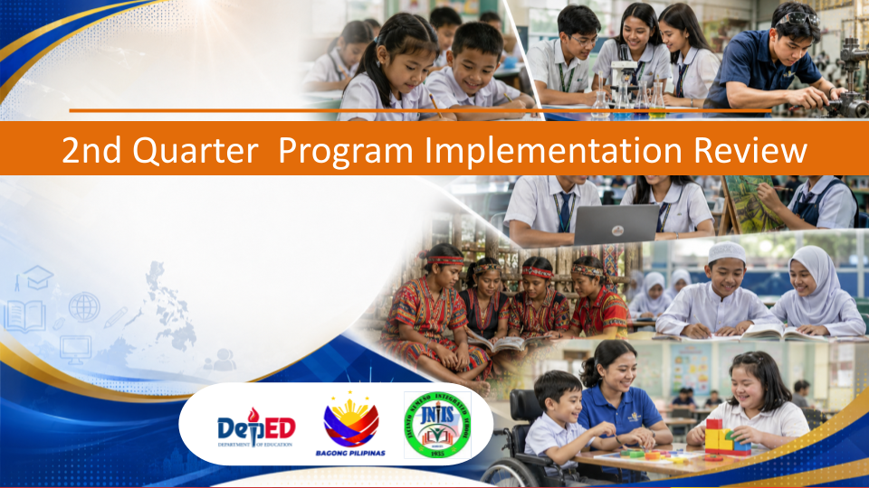

A walkthrough of enrolment, learning outcomes, school systems, and resource utilisation for the second quarter.
A small rural integrated school serving K–12 learners in Purok 1, Manaka, Ozamiz City — established 1935.
The School MOOE of Jacinto Nemeño Integrated School is properly managed and utilized by the School Head in coordination with the Administrative Officer, ADAS III, members of the Bids and Awards Committee (BAC), and the Inspectorate Team.
All utilization, procurement, disbursement, and liquidation processes strictly adhere to DepEd policies, government accounting rules, and Commission on Audit (COA) guidelines.
JNIS learner performance shows gradual improvement. NAT 6 results reflected positive gains across several learning areas, indicating interventions are contributing to learner improvement. Some learners still require continued support in literacy, numeracy, and mastery of competencies to reach higher proficiency.